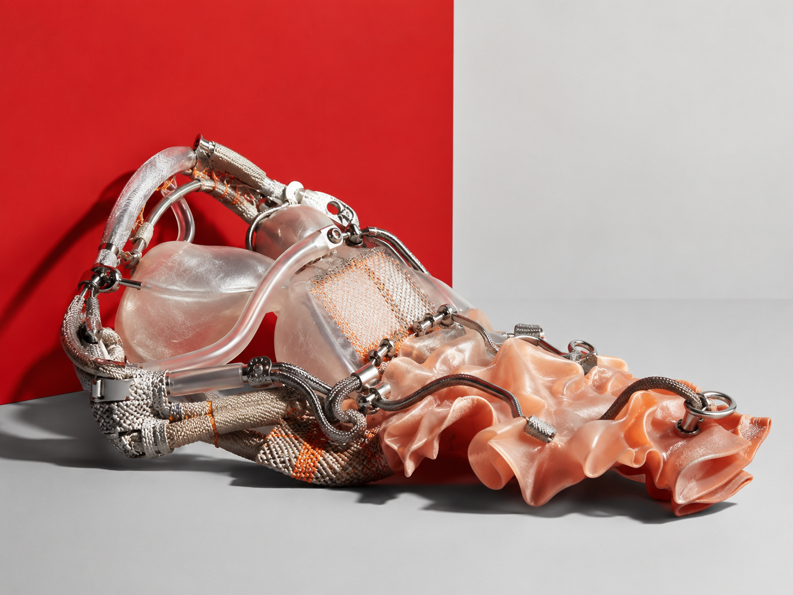
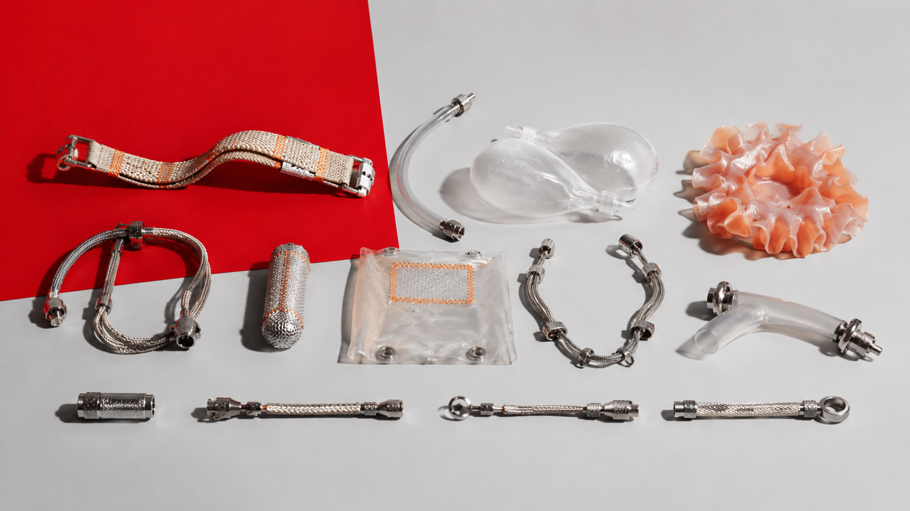
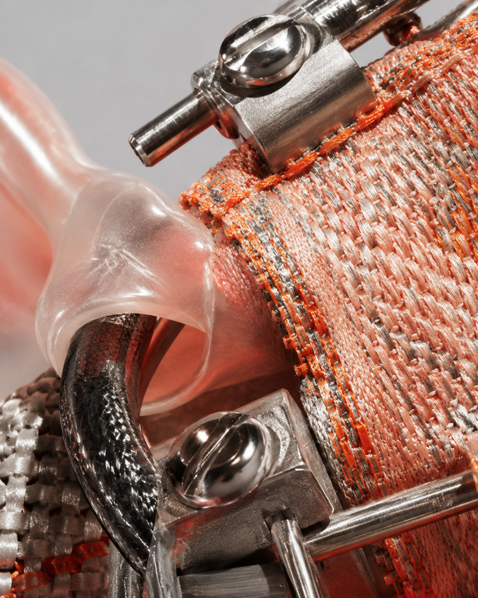
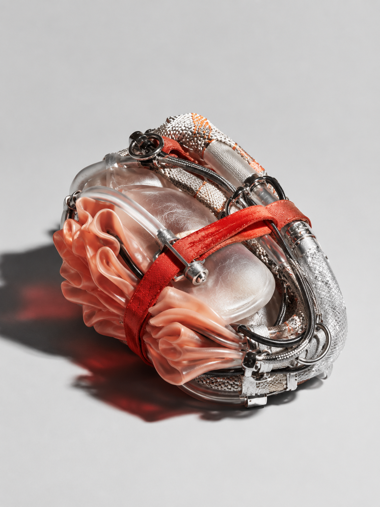
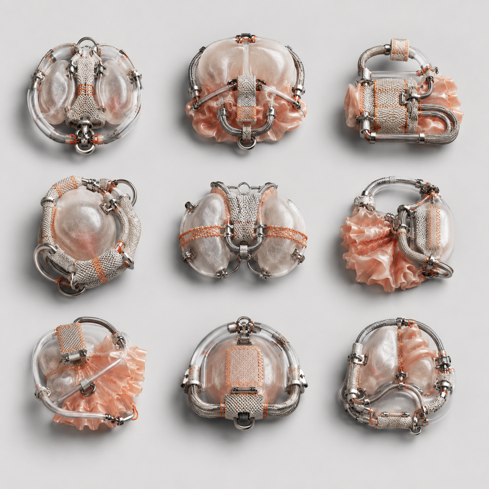

视觉方法 / PROCESS
通过反复弯折、穿插与替换模块，记录结构从松散组合到稳定连接的变化。
A05 · IMAGE
柔软硬件
以可触摸可交互的柔性机器测试身体质感与电子硬件质感之间的材料边界。

A05 SOFT HARDWARE｜柔软硬件以织物、软胶、线缆、透明塑料与金属接头为主要材料，构造一组可弯折、可触摸、具有连接逻辑的柔性机器。制作过程通过缝合、包覆、穿插与模块拼接，使柔软表面与硬件结构同时显现。图像记录重点呈现材料受力、接口关系与身体接触后的形态变化，并借此讨论触觉经验和实验装置之间的相互定义。
通过反复弯折、穿插与替换模块，记录结构从松散组合到稳定连接的变化。
我先从材料的触感和连接方式出发。测试中持续调整接头位置、表面张力与透明层次，并记录实际穿戴后装置在尺度和姿态上的变化。



